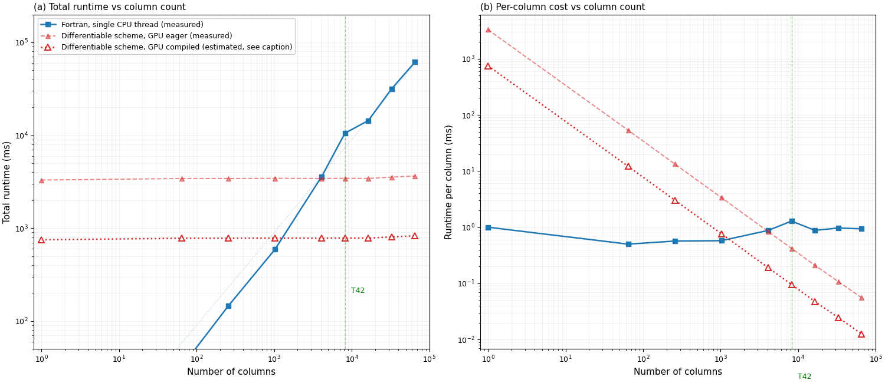

第五章 计算性能（Computational Performance）逐段精读
5.1 性能对比设计
Figure 4 reports the runtime scaling of the six-band shortwave calculation (137 levels, clear sky) on an NVIDIA A100 80GB GPU against the compiled Fortran reference on a single CPU thread, measured from 1 to 65,536 columns. All configurations produce bit-exact identical output.
图4报告了六波段短波计算（137层，晴空）在NVIDIA A100 80GB GPU上与编译的Fortran参考（CPU单线程）的运行时间缩放，列数从1到65,536。所有配置产生逐位精确相同的输出。

图4：运行时间随列数的缩放。（a）总运行时间（b）每列时间。蓝实心方=Fortran CPU（实测）；红实心三角虚线=GPU eager（实测）；红空心三角点线=GPU编译后（估算，由实测eager曲线除以4.4×因子导出，仅在N=256验证）。空心标记+点线明确区分估算与实测。
5.2 Fortran CPU基准
The Fortran reference scales approximately linearly with column count: at 256 columns it requires 145 ms (0.57 ms/column), increasing to 10.5 s at T42 (N_col = 8,192, 1.28 ms/column) and 61 s at 65,536 columns.
Fortran参考随列数近似线性缩放：256列时145 ms（0.57 ms/列），T42（8192列）时10.5 s（1.28 ms/列），65,536列时61 s。
Fortran是性能基准——它的内循环是连续编译机器码，零Python开销。中间列数的轻微超线性来自CPU缓存效应。这个线性基准为GPU加速比提供了分母。
5.3 GPU固定开销
On GPU without compiler optimization, a fixed overhead of approximately 3.4 s—arising from the approximately 1.8×10⁴ sequential tensor operations that constitute the adding-layer recurrences across 137 levels and six spectral bands—limits performance at small N_col.
在GPU上不使用编译器优化时，约3.4 s的固定开销——来自构成137层六波段叠加层递推的约1.8×10⁴个串行张量操作——限制了小N_col时的性能。
食堂打饭类比："排队+拿盘子+结账"=固定开销（~3.4s），"打主菜"=实际数值计算（与列数成正比但GPU并行很快）。当份数少时固定开销主导；当份数多时实际计算主导。
为什么1列也要3.4秒？因为循环是沿垂直方向的（137层×6波段=9300次串行迭代），与列数无关。叠加层递推是非线性递推——P_k依赖于P_{k-1}，必须逐层串行计算。这就像复利计算：不能跳过第1-9年直接算第10年。
5.4 编译优化
Compiler optimization reduces this overhead by a factor of 4.4 (verified bit-exact at N_col = 256), lowering the floor to approximately 0.8 s. The compiled-GPU curve is estimated from the measured eager-mode times divided by this empirically verified 4.4× speedup factor.
编译器优化将该开销减少4.4倍（在N_col=256时验证逐位精确），将固定开销降至约0.8 s。编译后GPU曲线是根据实测的eager模式时间除以经验验证的4.4倍加速因子估算的。
5.5 关键数字
| 列数 | Fortran CPU（实测） | GPU eager（实测） | GPU编译后（估算） | 加速比 |
|---|
| 256 | 145 ms | 3,421 ms | ~777 ms | GPU慢5× |
| 8192 (T42) | 10,531 ms | 3,442 ms | ~800 ms | 快13× |
| 65,536 | 61,376 ms | 3,645 ms | ~828 ms | 快74× |
交叉点在~1000列：T42时编译后GPU快13倍。编译开销~21秒（一次性，per-process），对业务数值天气预报或季节-年代际积分可忽略。